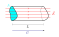

Wirkt auf Leitungselektronen ein elektrisches Feld, so werden diese entgegen der
Feldlinienrichtung beschleunigt. Jedoch sorgen Kollisionen mit Atomrümpfen dafür,
dass sich die Leitungselekronen, statt mit einer stetig zunehmenden,
mit einer konstanten Driftgeschwindigkeit
$$\vec{v}_\text{D} = \frac{q \cdot \tau}{m} \vec{E}$$
im Leiter fortbewegen. $\tau$ ist hierbei die mittlere Zeit zwischen zwei Stößen.
Diese Driftgeschwindigkeit können wir in die Formel der Stromdichte
einsetzen
\begin{align*}
\vec{j} &= n \cdot q \cdot \vec{v}_\text{D} \\
\vec{j} &= \underbrace{\frac{n \cdot q^2 \cdot \tau}{m}}_{=\sigma_\text{el}} \vec{E} \\
\mathbf{\vec{j}} &= \mathbf{\sigma_\text{el} \vec{E}}
\end{align*}
mit elektrischer Leitfähigkeit $\sigma_\text{el}$, dessen Kehrwert als spezifischer
Widerstand
$$\rho_\text{s} = \frac{1}{\sigma_\text{el}}$$
definiert ist.
Betrachte einen homogenen Leiter mit Länge $L$ und Querschnittsfläche $A$, der
von einer konstanten Stromdichte $\vec{j}$ durchflossen wird.

Da die Stromdichte $\vec{j}$ konstant ist, ist auch die elektrische Feldstärke
$\vec{E}$ konstant.
$$\vec{E} = \frac{\vec{j}}{\sigma_\text{el}}$$
Dies können wir uns bei der Berechnung der Spannung $U$ zu Nutze machen.
$$U = \int_l \vec{E}\ \text{d}\vec{l} = \int_l E\ \text{d}l = E \int_l \text{d}l = E L$$
Einsetzen der elektrischen Feldstärke liefert
\begin{align*}
U &= E L \\
U &= \frac{j}{\sigma_\text{el}} L \\
U &= \underbrace{\frac{L}{A \sigma_\text{el}}}_{=R} I \\
\mathbf{U} &= \mathbf{RI}
\end{align*}